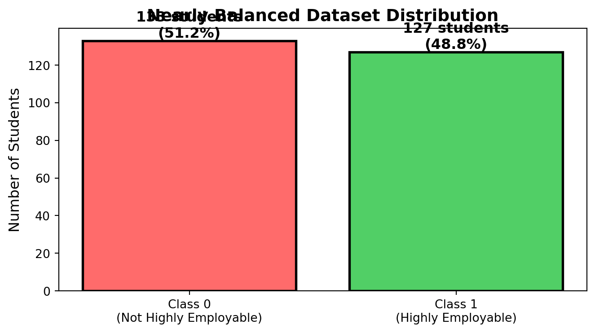
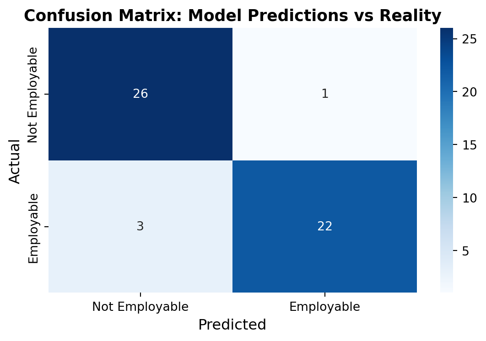
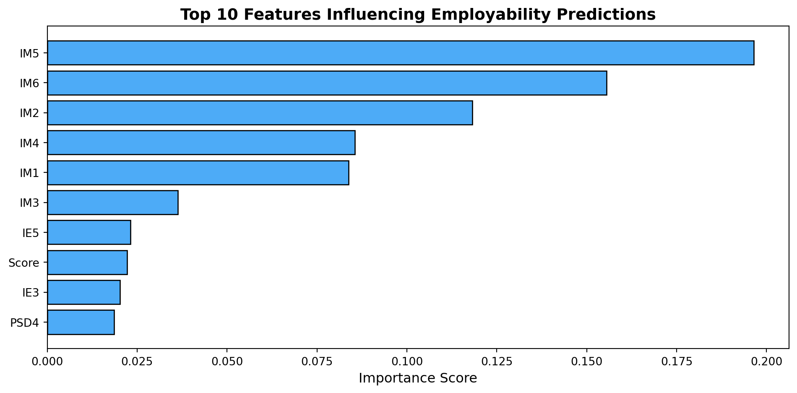

Dataset size: 260 students, 39 features
First 10 columns: ['ID', 'Gender', 'Nationality', 'Major', 'Level', 'IE1', 'SMSK3', 'RAS1', 'RAS2', 'SMSK1']A Machine Learning Approach to Career Readiness Assessment
This presentation explores a machine learning solution designed to predict student employability based on academic performance, skills development, and professional preparation.
Interactive Demo: Try the live application
Assignment for: Anavid AI
Research Question: Can we predict student employability using measurable academic and professional indicators?
Our Approach:
Impact: This system helps universities identify students who may need additional career support and allows students to understand which skills most influence their job prospects.
Dataset size: 260 students, 39 features
First 10 columns: ['ID', 'Gender', 'Nationality', 'Major', 'Level', 'IE1', 'SMSK3', 'RAS1', 'RAS2', 'SMSK1']Feature Categories:
# Check class distribution
class_dist = df['Class'].value_counts()
print(f"Class 0 (Not Highly Employable): {class_dist[0]} students")
print(f"Class 1 (Highly Employable): {class_dist[1]} students")
print(f"\nBalance ratio: {min(class_dist)/max(class_dist):.2%}")
# Visualize
fig, ax = plt.subplots(figsize=(7, 4))
colors = ['#ff6b6b', '#51cf66']
bars = ax.bar(['Class 0\n(Not Highly Employable)', 'Class 1\n(Highly Employable)'],
class_dist.values, color=colors, edgecolor='black', linewidth=2)
# Add value labels
for bar in bars:
height = bar.get_height()
ax.text(bar.get_x() + bar.get_width()/2., height,
f'{int(height)} students\n({height/len(df)*100:.1f}%)',
ha='center', va='bottom', fontweight='bold', fontsize=12)
ax.set_ylabel('Number of Students', fontsize=12)
ax.set_title('Nearly Balanced Dataset Distribution', fontsize=14, fontweight='bold')
plt.tight_layout()
plt.show()Class 0 (Not Highly Employable): 133 students
Class 1 (Highly Employable): 127 students
Balance ratio: 95.49%
Why this matters: A balanced dataset ensures the model learns both classes equally well, preventing bias toward either outcome.
from sklearn.impute import SimpleImputer
# Remove ID column (not predictive)
df_clean = df.drop('ID', axis=1)
# Separate features and target
X = df_clean.drop('Class', axis=1)
y = df_clean['Class']
# Handle missing values
imputer = SimpleImputer(strategy='mean')
X_imputed = imputer.fit_transform(X)
print(f"Removed non-predictive ID column")
print(f"Features: {X.shape[1]} columns")
print(f"Missing values handled: {df.isnull().sum().sum()} filled with column means")Removed non-predictive ID column
Features: 37 columns
Missing values handled: 85 filled with column meansTechnical Approach:
For Non-Technical Readers: We cleaned the data by removing student IDs and filling in any missing test scores with average values, ensuring the model has complete information to work with.
from sklearn.ensemble import RandomForestClassifier
from sklearn.model_selection import train_test_split
# Split data: 80% training, 20% testing
X_train, X_test, y_train, y_test = train_test_split(
X_imputed, y, test_size=0.2, random_state=42, stratify=y
)
# Create and train the model
model = RandomForestClassifier(n_estimators=100, random_state=42)
model.fit(X_train, y_train)
print(f"Model trained with {model.n_estimators} decision trees")
print(f"Training samples: {len(X_train)}")
print(f"Test samples: {len(X_test)}")Model trained with 100 decision trees
Training samples: 208
Test samples: 52Technical Details: Random Forest is an ensemble method that combines 100 decision trees, each trained on different subsets of data. Final prediction is determined by majority vote.
Simplified Explanation: Think of it like consulting 100 experts who each make a prediction based on slightly different information. The final answer is what most experts agree on. This approach reduces errors and improves reliability.
from sklearn.metrics import classification_report, confusion_matrix
import seaborn as sns
# Make predictions
y_pred = model.predict(X_test)
# Print metrics
print("Performance Metrics:")
print(classification_report(y_test, y_pred))
# Visualize confusion matrix
fig, ax = plt.subplots(figsize=(6, 4))
cm = confusion_matrix(y_test, y_pred)
sns.heatmap(cm, annot=True, fmt='d', cmap='Blues', ax=ax,
xticklabels=['Not Employable', 'Employable'],
yticklabels=['Not Employable', 'Employable'])
ax.set_xlabel('Predicted', fontsize=12)
ax.set_ylabel('Actual', fontsize=12)
ax.set_title('Confusion Matrix: Model Predictions vs Reality', fontsize=13, fontweight='bold')
plt.tight_layout()
plt.show()Performance Metrics:
precision recall f1-score support
0 0.90 0.96 0.93 27
1 0.96 0.88 0.92 25
accuracy 0.92 52
macro avg 0.93 0.92 0.92 52
weighted avg 0.93 0.92 0.92 52

Result: 92% accuracy with balanced performance across both classes
# Get feature importance
feature_importance = pd.DataFrame({
'feature': X.columns,
'importance': model.feature_importances_
}).sort_values('importance', ascending=False)
print("Top 5 Most Important Features:")
print(feature_importance.head())
# Visualize top 10
top_10 = feature_importance.head(10)
fig, ax = plt.subplots(figsize=(10, 5))
bars = ax.barh(top_10['feature'], top_10['importance'], color='#4dabf7', edgecolor='black')
ax.set_xlabel('Importance Score', fontsize=12)
ax.set_title('Top 10 Features Influencing Employability Predictions', fontsize=14, fontweight='bold')
ax.invert_yaxis()
plt.tight_layout()
plt.show()Top 5 Most Important Features:
feature importance
30 IM5 0.196434
31 IM6 0.155455
27 IM2 0.118184
29 IM4 0.085489
26 IM1 0.083829
Key Insight: The model identifies which specific skills and experiences most strongly correlate with employability outcomes.
Algorithm Selection: Random Forest
Why we chose this approach:
Cross-Validation Strategy:
Key Hyperparameters:
n_estimators=100: Number of trees in the forestrandom_state=42: Ensures reproducibilitystratify=y: Preserves class balance in train/test splitFor Technical Audience:
For Business Stakeholders:
Our model works like a smart recommendation system:
This level of accuracy makes it practical for real-world decision support.
Live Demo: https://anavid-kouki.streamlit.app/
Features:
Manual Entry Mode - Enter student data field by field - Load example data for quick testing - Instant prediction with confidence scores - Visual probability display
Batch Processing Mode - Upload Excel files with multiple students - Process all records at once - Download results as CSV - Summary statistics and visualizations
Technology Stack:
For Universities:
For Students:
For Employers:
From our analysis of 260 students:
Class Balance is Critical: Our 51/49 split ensures fair predictions for all students, avoiding bias toward either outcome.
Multiple Factors Matter: No single metric dominates. Employability depends on a combination of academic performance, practical skills, and professional development.
Accuracy is High: 92% accuracy suggests the features we measured genuinely correlate with employability outcomes.
Model is Practical: Cross-validation (F1 = 0.97 ± 0.06) shows the model generalizes well beyond training data, making it reliable for real-world use.
Interpretation is Possible: Feature importance scores allow us to explain why the model makes specific predictions, building trust with users.
Current Limitations:
Planned Enhancements:
Production Pipeline:
Infrastructure:
Cost: Entirely free using community tiers and open-source tools
This project demonstrates a complete machine learning workflow from data analysis through production deployment:
Technical Achievement: - Built a robust classification system with 92% accuracy - Implemented proper validation and testing procedures - Created production-ready deployment infrastructure
Practical Impact: - Provides actionable insights for career development - Scales to handle individual or batch predictions - Accessible through user-friendly web interface
Learning Outcomes: - Applied supervised learning to real-world problem - Balanced technical rigor with practical usability - Demonstrated end-to-end ML system development
Try it yourself: https://anavid-kouki.streamlit.app/
Project Resources:
Assignment Prepared for: Anavid AI
Acknowledgments: Thank you to Anavid for providing this learning opportunity and to the students whose anonymized data made this research possible.
Model Hyperparameters:
Cross-Validation Results:
Anavid | Employability ML Project